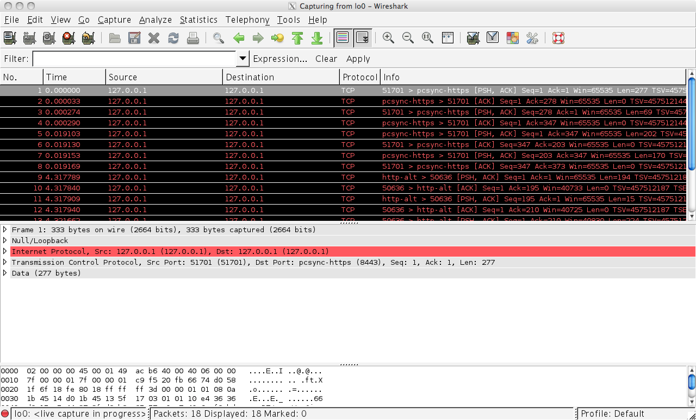

Lab 1 - Secure Connection
Lab
The first lab, we’ll use a proxy server such as Charles to proxy the ExploitMe mobile request. This guide assumes that you have configured your Xcode environment with ExploitMe Mobile for iPhone. If not, please ensure you read the setup guide first.
Launch the lab server:
python app.pyAnd launch the application in the simulator 
In the first lab, we’ll be inspecting iPhone network traffic to see how the app is sending bank traffic to LabServer.
Launch your favourite proxy and ensure that MacOSX is set up to use the proxy server. The iPhone simulator obey’s the OSX settings for a proxy. You can configure it in Preferences -> Network & Sharing -> Proxies.
Ensure that your proxy is correctly accepting network traffic and then run the iPhone ExploitMe Mobile lab in the simulator. Once the simulator is running, login using the standard login and password jdoe/password for the user, or if you’ve already logged in before, enter your local password you configured on first run.
Below you can see our network traffic from the iPhone EMM app to our lab server.
It is clear that the application is using clear-text at this point and that HTTP traffic can be trapped and modified.This is often the first step to attacking any mobile application and if you’ve made it this far, you now are able to fully act as a man in the middle against any iPhone application.
In the following screenshot, we can see that EMM sends user credentials upon first entry to the application in clear-text.The username and password is clearly shown. 
You can achieve the same effect by using wireshark. Since both the simulator and the server are running on the same server, we need to monitor the loopback interface (lo0) to view communication between your computer and itself. 
Solution
We want to encrypt the communication between the client and server so that we can’t so easily man-in-the-middle it. Since we are using HTTP for communication, all we have to do is change the protocol to HTTPS and thus enable SSL/TLS.
We relaunch the server in ssl mode and run it on port 8443:
python app.pyt --ssl --port 8443In the iPhone simulator, under Settings -> Base we change the URL to http://localhost:8443: 
Now, we can see in Wireshark that the communication is encrypted: 
We can still use Charles (or another proxy) to intercept SSL traffic as long as we accept the Charles SSL certificate in the iOS simulator. More information on how to do that here.
When using a proxy that intercepts SSL, we can see the decrypted traffic: 
Above, Charles can decrypt the SSL-encrypted traffic for us since we accepted the Charles certificate as valid in the simulator.